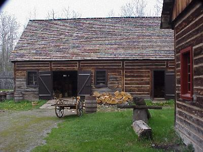

May 17, 1164 miles
| We started the day a little later, pulling out of camp at about 9:15. It was a little overcast and we slept in a little. | |
| We
started the day right here in Thunder Bay by touring Fort
William. A recreation of the origninal 1815 fort,
complete with interpretive actors playing roles of many
of the fort's personnel. We took the guided tour of the Fort, but being this early in the season, and on a week day, we had to suffer through a guided tour of just the two of us and the guide. During the summer these tour groups may have 30 people in them. The recreation of the Fort is extremely well done and the interpretive guides do an excellent job of acting the part they are playing. There were hundreds of actual furs in the trading post, as well as a good representation of the goods the North West Company traided. I am sure this will be one of the highlights of the trip. The fort was built at the western head quarters of the North West Company. |
|
| Some of the buildings at the fort included:
apothecary, Boucher's House, Various stores, barns,
warehouses, counting house, great hall, gaol, hospital,
kitchen, canoe shed, ... some 42 buildings in all. The cooperage is shown here. |
 |
| Inside the cooperage, the cooper showed us how various buckets, barrels and vats were constructed and maintained. | |
| Inside the Great Hall kitchen one of the
interperative guides showed us all of the latest 1815
kitchen gadgets. A great show for gadget nuts like us! This kitchen would have only been used to cook for the upper class of Partners, Traders, Apprentice Traders, Guides, and Interpreters. NO WOMEN! |
|
| Just outside the fort's walls (they claim the walls
were just to keep wild animals out) was the indian
village. This village was a rather permanent construction, with the teepees made of poles and sewn birch bark. |
|
| After leaving Fort William and getting on the road at well into the afternoon we made one more stop at the Kakabeka Falls. These falls are 225 feet wide by 130 feet high. Under their agreement with the Province, the hydro company allows 150 cubic feet per second of water to flow over the fall mid weekday, such as when we visitied. The flow is increased to 300 cfm on weekends, and shut off at night. The ballance of the water is used to generate electricity after it flows down three penstocks, each 10 feet in diameter! Could you imagine if all that water were flowing over the falls? | |
| We pulled into camp, in Aaron Provincial
Park, at about 6:00 PM, after traveling 229 miles. The
park was the nicest of all those we have visited so far,
the campsites relativley remote from each other,
washrooms clean, and we were right on the water, both
sides.
No special wild life on this day, but with the tour of Fort William and the excellent camp ground it was a good day. |
|